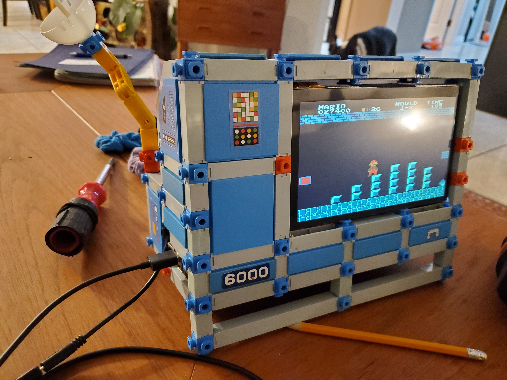
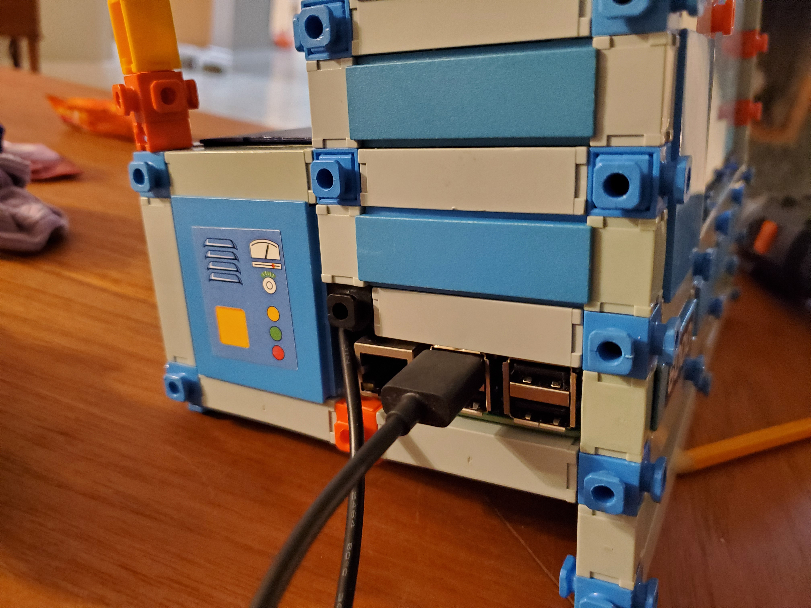
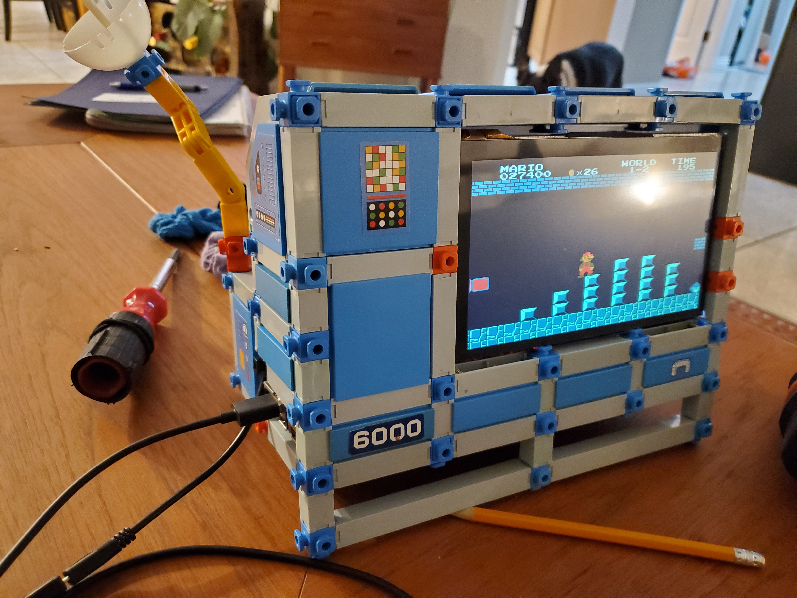
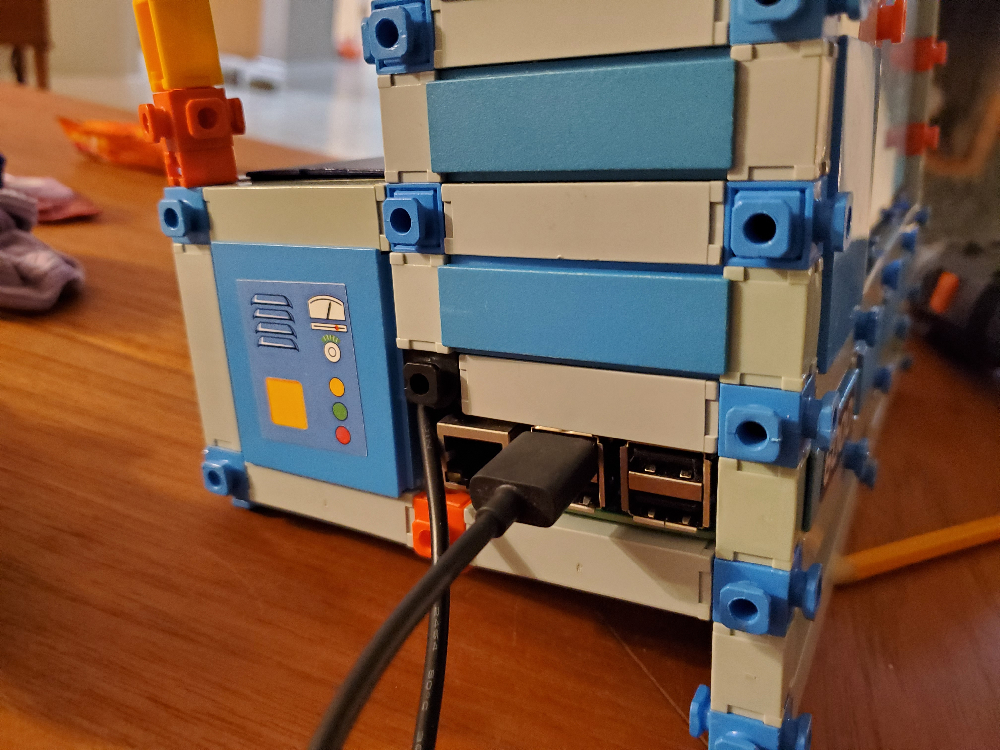

|  |  |  |
It was late summer of 2023 when I first realized that almost all of my friends have retro gaming consoles of some kind. To say that I felt left out is an understatement! All of these years, I'd been saving old consoles (NES, Atari 2600...) under the staircase only to have been leapfrogged by emulators for Raspberry Pi!
I had to move quickly, but I also felt the need to do something original. Alas, with Retropie as the default do-everything emulator, and Raspberry Pi as the default do-everything computer, was there any room left for innovation? The only obvious room for creativity that I could see was in building the enclosure, so I racked my brain looking for something retro-y that I could wrap around the various necessary components. And it only took a minute -- because right there in front of me was a box of my beloved Construx!
Construx is a building toy that was launched by Fisher-Price in 1983 and ran until 1988. That tiny production window caught me at exactly the right ages (2-7) and was an absolutely huge part of those early formative years for me. I truly believed that with enough Construx I could build anything! Sometimes still in my dreams Construx represents the fundamental building blocks of the universe. It was the perfect choice for my personal take on the Retro Arcade fad.
|  |  | |
I was able to find most of the parts that I needed by ripping them out of other projects that I had lying around. The one thing that I chose to buy was a package of micro USB cables with wires exposed on one end because I needed to power both the screen and the Pi from a single wall plug. This big was also the only soldering required. My parts list included:
I wanted the Construx enclosure to look like a traditional computer terimal but also to showcase some of the look and feel of the Construx toy. I used mostly flat blue panels to create the former, and I put a satellite dish laser weapon on the side plus some engine piecesto achieve the latter. I also put two white cylinders on the back with the initial thought that they might look like vacuum tubes, but then I put rocket engine pieces into them and decided that they should be power crystals instead. I used wood screws to attach the electronic parts to the Construx. I know it's a bit of a sin to drill holes in precious old toys, but I have more Construx than I will ever use and my kid is already too old for it, so... I closed my eyes and drilled.
Once I built my arcade machine I posted a picture to Facebook, played one game of Mario Bros, and got bored. I thought about my Atari 2600 and how much simpler those games were and that got me thinking about my past experiences coding in assembly and THAT got me thinking that I should totally try to write an Atari game. So I think that'll be the next project!